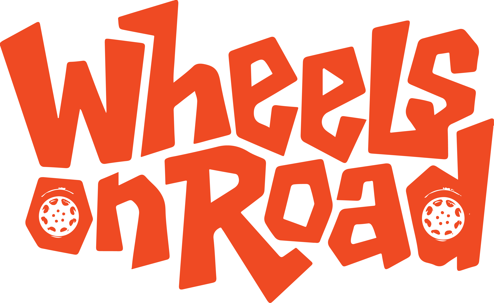
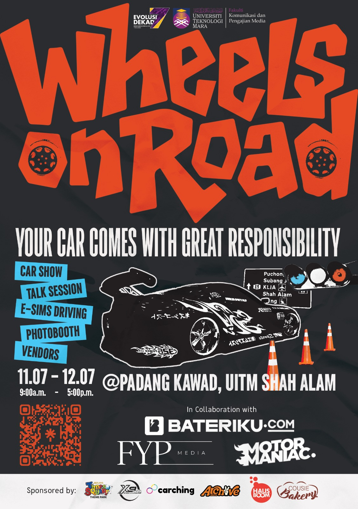
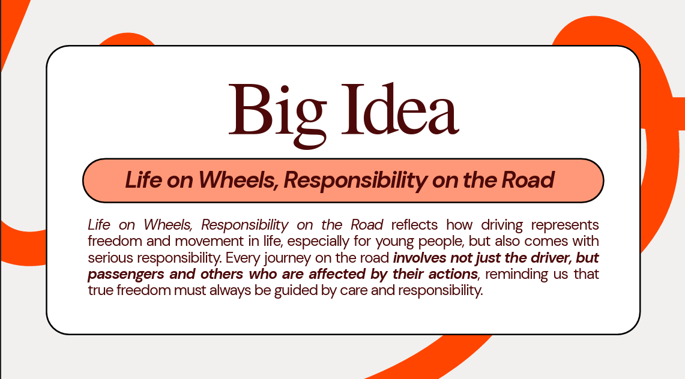
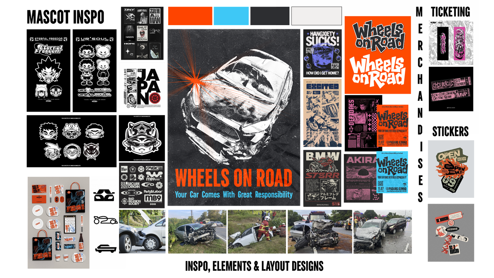
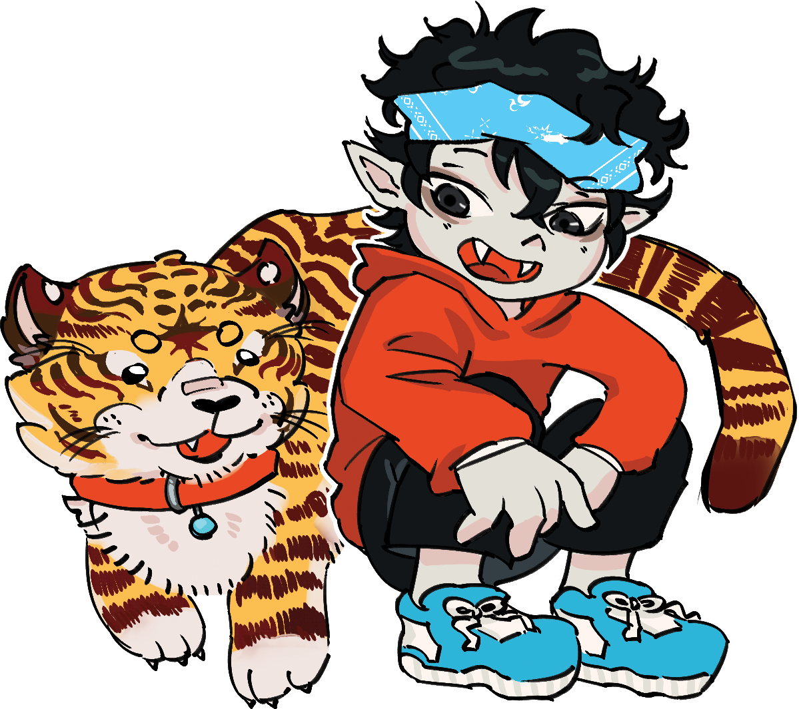
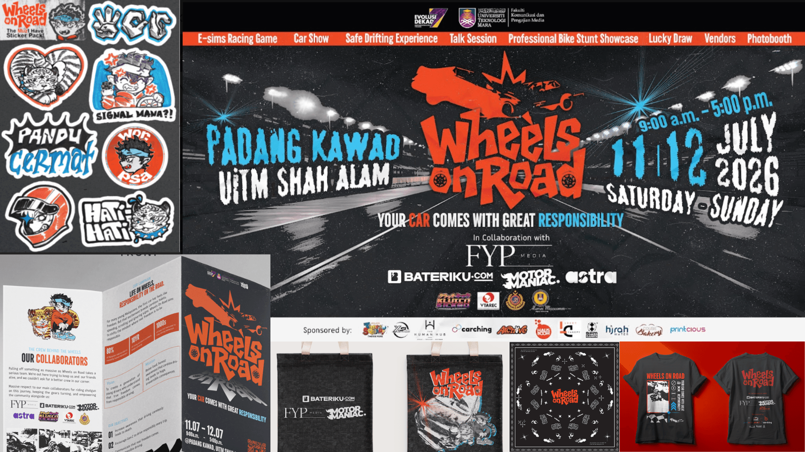
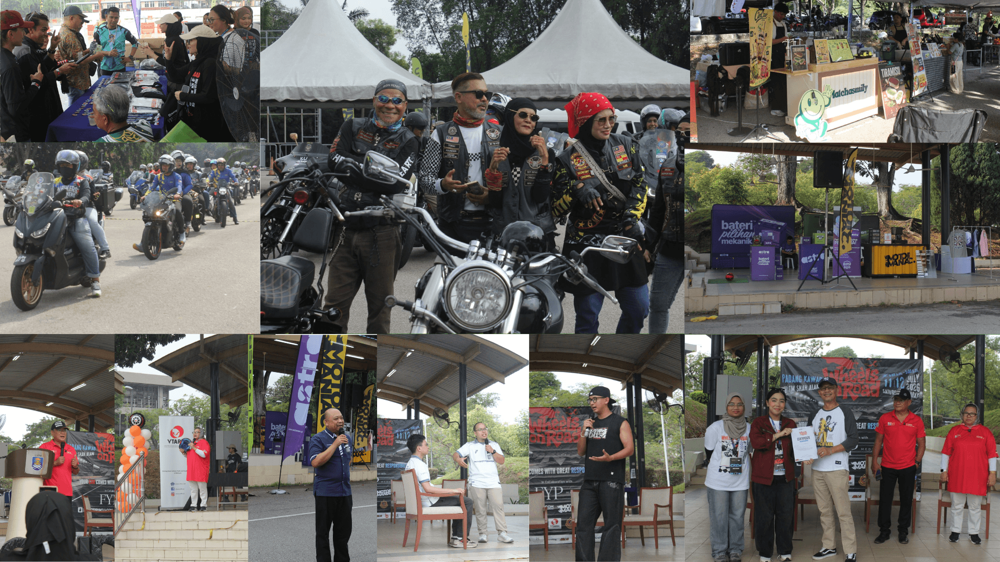
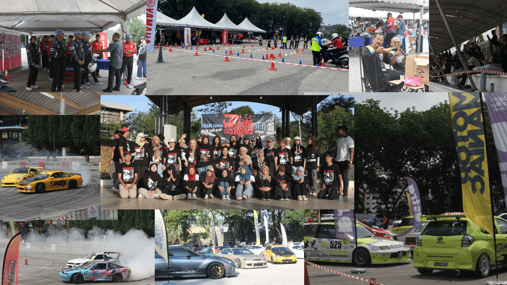
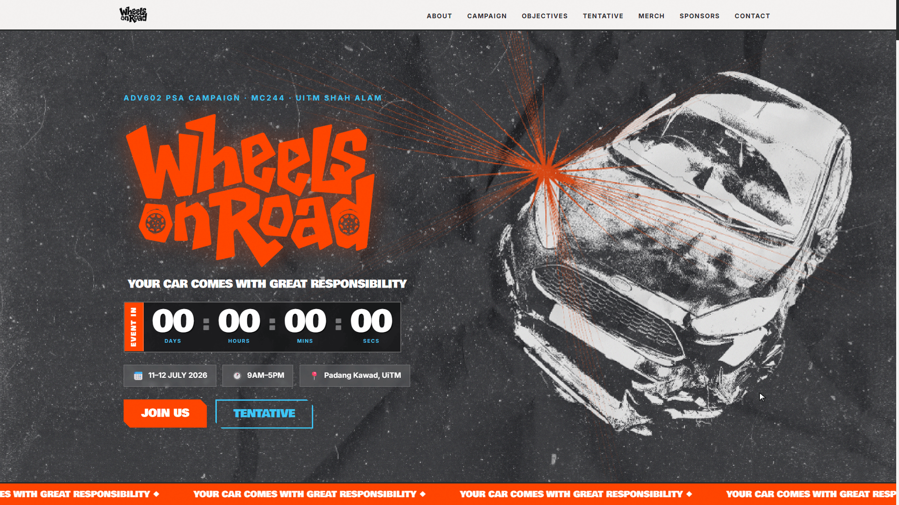

SOCIAL AWARENESS CAMPAIGN

Your Car Comes With Great Responsibility
An integrated social awareness campaign encouraging Gen-Z drivers to rethink freedom behind the wheel through bold storytelling, digital engagement, and community activation.

THE CHALLENGE
80%
of road accidents in Malaysia are caused by human behaviour and negligence.
For many young Malaysians, driving represents freedom. But habits like speeding, distracted driving, and ignoring traffic rules continue to turn everyday journeys into tragic consequences. Wheels On Road was created to challenge that mindset and encourage a new generation of responsible drivers.
THE CAMPAIGN IDEA
Your Car Comes With Great Responsibility.
Wheels On Road reframes driving as a responsibility rather than a privilege. Every creative touchpoint, from digital content to community activation to reinforces the message that true freedom comes from protecting yourself and others on the road.

BRAND IDENTITY
Building A Campaign People Would Remember
Wheels On Road combines a bold neo-punk visual language with relatable storytelling to transform road safety into a campaign that feels relevant, memorable, and built for Gen-Z.
Campaign Logo
Colour System
Urgency & Awareness
Trust & Safety
Asphalt & Reality
Moodboard

Meet Muzzy and Simba
Muzzy is the campaign mascot designed to make responsible driving feel approachable, memorable, and highly shareable among Gen-Z audiences.

CAMPAIGN EXPERIENCE
Bringing The Campaign To Life
Wheels On Road transformed a road safety message into a complete campaign journey — combining digital storytelling, physical branding, community activation, and digital engagement.
Digital Campaign
Starting the conversation through social media content, PSA videos, and digital storytelling designed to connect with Gen-Z drivers.
Physical Touchpoints
Extending the campaign identity beyond screens through printed materials, merchandise, and awareness materials.

CSR Activation
Turning awareness into action through a two-day community activation featuring forums, car showcases, vendor booths, and audience engagement.


Campaign Website
A digital hub connecting campaign information, event updates, and audience engagement.

BEHIND THE CAMPAIGN
My Role as Vice Campaign Director
I acted as the bridge between strategy, creative direction, and execution—ensuring every touchpoint remained aligned while keeping the campaign moving from concept to launch.
Strategy
Co-developed the campaign strategy, key messaging, sponsorship direction, and overall planning framework.
Creative Leadership
Maintained consistency across every asset—from the Neo-Punk identity to social media, print and events.
Execution
Coordinated multiple teams, managed timelines, and ensured all deliverables were completed before launch.
Event Operations
Oversaw logistics for the two-day CSR activation, vendors, speakers, and programme flow.
REFLECTION
What This Campaign Taught Me
Wheels On Road challenged me to think beyond creating good visuals. As Vice Campaign Director, I learned how to align strategy, creative direction, and execution across multiple teams while maintaining a consistent campaign identity from concept to launch.
More importantly, the experience reinforced that impactful campaigns are built through collaboration. Great ideas only succeed when every touchpoint from digital content and event experiences to branding and production works together to communicate one clear message.